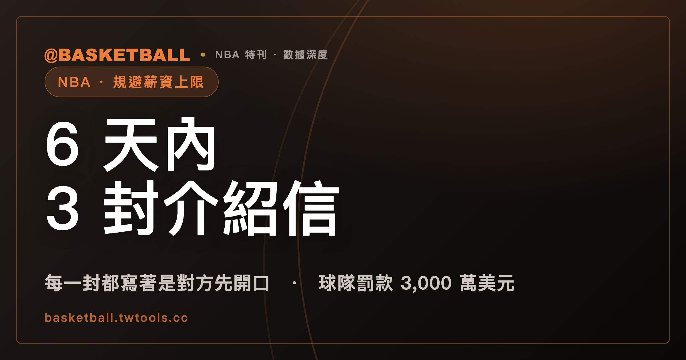

快艇在 6 天內寄出 3 封介紹信，每一封都寫著「是對方先開口」
2020 年 6 月的 6 天裡，快艇業務營運總裁祖克寄出 3 封介紹信，把雷納德的舅舅兼經紀人羅伯森介紹給正在跟快艇談生意的公司；每一封信都寫著同一個理由，是對方先開口。6 年後，NBA 罰款快艇 3,000 萬美元，沒收 5 個首輪選秀權，老闆鮑默停權 1 年。

2020 年 6 月，6 天之內，洛杉磯快艇業務營運總裁祖克（Gillian Zucker）寄出 3 封介紹信，把雷納德（Kawhi Leonard）的舅舅兼經紀人羅伯森（Dennis Robertson）介紹給 3 家正與快艇談生意的公司。每一封信都寫著同一個理由：是對方先開口要求引介。6 年後，NBA 公布對快艇的處分：球隊罰款 3,000 萬美元，沒收 2029 至 2033 年共 5 個首輪選秀權，老闆鮑默（Steve Ballmer）停權 1 年。調查報告寫的是：沒有任何文件能支持那三封信的說法。
規則只留一個窄門：對方先開口，球隊才能給聯絡方式
規則寫在調查報告裡：球隊不得主動把球員介紹給潛在的第三方商業夥伴。唯一的例外很窄：只有在對方主動要求引介時，球隊才可以提供球員或其經紀人的聯絡方式。
調查報告認定，快艇的違規行為共有 5 種：主動發起引介、促成交易、以球隊的生意利誘這些公司、代付雷納德的私人開銷，以及沒有通報羅伯森的不當索求。
6 天內 3 封介紹信，每一封都寫著是對方先開口
羅伯森代表雷納德，開出的目標很具體：報告寫，他期待快艇協助雷納德每年拿到大約 1,000 萬美元的場外收入，對象主要是法蘭克，鮑默與祖克也在內。報告接著寫：沒有證據顯示這幾個人叫羅伯森停手，也沒有人依聯盟規則通報。
2020 年 3 月，COVID-19 讓 NBA 停賽。同年 4 月，羅伯森向鮑默與法蘭克表達不滿，抱怨快艇在促成場外生意機會這件事上不夠努力，還等不及要拿到錢。依法蘭克當時的筆記記載，羅伯森向鮑默抱怨祖克淨介紹一些「bull**** deals」。同一份筆記也記下鮑默的回應：他和快艇同仁都是「collective workers to try to help [Mr. Leonard] achieve his financial goals」；祖克則向羅伯森保證鮑默會信守承諾。羅伯森接著要求一份 3 到 6 個月的計畫，以及一張列出 5 到 6 家公司的名單。
2020 年 6 月上旬的 6 天之間，祖克接連寄出電子郵件，把羅伯森介紹給 3 家公司的高層。報告寫，這 3 家都是快艇當時正在談生意的對象。
每一封信，祖克都寫著同一句話：這次接觸是應對方要求，才為雷納德做的引介。調查報告接著寫：沒有任何文件能支持這些說法（No documentary evidence supports those statements），祖克向調查者表示，自己想不起是什麼原因促使她寫下這些信。調查員自己的判斷是：不相信這 3 家公司真的剛好在 6 天之內、在 COVID-19 疫情最深、聯盟停賽期間，各自主動要求引介雷納德。
第 2 封信寄出的同一天，雷納德和舅舅登記了一家公司
2020 年 6 月 9 日——也就是祖克寄出第 2 封引介信的同一天——一家名為 KL2 LBS LLC 的有限責任公司送件登記。報告寫，這家公司的成員是雷納德與羅伯森，後來成為雷納德與 Boingo、Daktronics、Lockton 這 3 份代言約的簽約對象。報告沒有寫是誰設立這家公司，也沒有寫快艇是否參與設立。
報告認為時序本身有意義：在快艇被指稱的第 1 次「引介」之後 3 天內、第 2 次的同一天、第 3 次之前，雷納德的代表就已經在採取法律行動，準備接受付款。這幾家公司與雷納德或其代表之間，那時候還不可能有任何關於代言約的互動或談判——如果這些引介真的是對方主動提出的。
3 家公司付了 1,800 萬，雷納德被確認做過的事是去了一次軍事基地
引介之後不到 1 個月，雷納德與這 3 家公司裡的 2 家，在同一天簽下多年期、數百萬美元等級的代言合約；8 月底，第 3 家也簽了類似合約。9 月初，3 份合約都已開始付款。3 份合約合計 1,800 萬美元，到 2021 年 8 月已經全數付給雷納德。
調查報告列出這 3 份合約的 5 個共同特徵：簽約時間都落在 COVID-19 疫情最深的階段，聯盟與代言交易的專家都說，那段時間企業極少簽這種約；這 3 家公司在此之前、之後都沒有簽過同等級的代言約，也沒有簽過同等級的運動員；相對付出的錢，合約要求雷納德做的事極少；沒有一份合約公開宣布過。報告說，這違背了代言合約的根本目的——企業付錢，本來就是要買那個公開的連結。調查也沒有查到這些企業動用過合約權利，辦過有意義的球員活動。
報告記載，雷納德在這 3 份合約底下唯一被確認做過的事，是去了一次軍事基地（其中一份合約），以及簽了一些紀念品（另一份合約）。這是那 3 份合約的紀錄；Aspiration 那份另外算。
其中一份合約，快艇後來促成 Daktronics 把付給雷納德的第 2 年款項加碼 200 萬美元，交換條件是雷納德要多提供一些服務；那份修訂在 2021 年 5 月 20 日簽署。報告特別寫明，這筆加碼付款的動機不是來自 Daktronics，而是完全出自快艇。
Daktronics 在競標，快艇要它把錢「spend back」到球員身上
2020 年春天，Daktronics 正在快艇發起的招標程序裡，競逐 Intuit Dome 的數位計分板與標示系統合約。2020 年 5 月，快艇告知 Daktronics，它是球隊的首選供應商，但球隊希望雙方談成一個「spend back」的安排：Daktronics 要把一部分生意回饋給快艇。報告寫道，Daktronics 自己認為，如果不與雷納德建立商業關係，可能會危及拿下 Intuit Dome 標案的機會。同年 5 月稍晚，一名快艇資深主管在與 Daktronics 資深主管的通話裡，明確講出快艇希望 Daktronics 付給雷納德的具體財務條件。
兩年後的 Aspiration：一則簡訊把兩份合約綁在一起
Aspiration 是一家永續服務公司，後來破產。雷納德跟它談成一份代言約。內部電郵顯示，Aspiration 最初開出的條件是，雷納德只要仍在快艇效力，每年拿現金 500 萬美元、股票 700 萬美元，為期 4 年。應雷納德要求，現金與股票的金額後來對調，最終合約是每年現金 700 萬美元、股票 500 萬美元，為期 4 年，合計 4,800 萬美元。2,800 萬美元是這份合約現金部分的 4 年總額，不是合約總額。
代言交易的專家告訴調查者，這個報酬高得離譜——一來合約要雷納德做的事極少，二來他當時在代言市場的份量本來就不算大。
鮑默與祖克向調查者表示，快艇 4 年要向 Aspiration 支出的 2,800 萬美元，是一名顧問研究得出的結論：The Forum 需要這筆預算抵銷碳排放。調查者直接訪談了這名顧問，對方的說法方向相反：是快艇先給了他 2,800 萬美元的預算，要他拿這筆錢去處理碳排放，不是他先算出需要這筆錢。報告只記載了這兩組相反的陳述，沒有裁定哪一方為真。
快艇與 Aspiration 之間，另外還有一份 Forum Agreement，名義上的目的是把快艇老闆鮑默 2020 年 5 月買下的英格塢球館 The Forum，歷史碳排放歸零。兩份協議分別是 Forum Agreement 與雷納德—Aspiration 代言約。
調查報告寫，兩者的關聯在 2022 年 3 月底變得明確。Aspiration 共同創辦人桑柏格（Joseph Sanberg）要求 Forum Agreement 必須在當季結束前簽成；眼看談判趕不上進度，他向快艇與其他相關人士表達不滿，並揚言不簽雷納德與 Aspiration 的代言約。
2022 年 3 月 30 日，桑柏格傳了一則簡訊給經祖克建議、參與雷納德與 Aspiration 代言約談判的一名業務代理人：如果 Forum Agreement 沒解決，他就要撕毀跟快艇的合約，雷納德這邊什麼都不談，並且提告。同一串訊息裡還有一句最直白：Kawhi deal is not happening without this Forum deal. 這裡的「Kawhi deal」指的是雷納德與 Aspiration 那份代言約，不是他跟快艇的球員合約。這是桑柏格自己的話。
桑柏格是 Aspiration 共同創辦人，也是調查者訪談過的證人之一；報告寫明，他後來因為在 Aspiration 任內的詐欺行為被定罪，稱他是a convicted felon。調查員對他的說法保持審慎：訪談前先仔細核對是否與書面紀錄一致，而且盡可能只在有其他證據佐證時才採用他提供的資訊——報告寫remained cautious in relying on Mr. Sanberg's information。上面那則簡訊，報告能採用的原因正是有其他證據佐證：快艇高層的內部通訊確認，他們知道 Aspiration 正在主張這兩份合約綁在一起——這句話說的是快艇知道對方在這樣主張，不是快艇承認綁定屬實；另外，2022 年 2 月的電郵也記載了同樣的年額連動關係。
錢的部分，報告用的是審慎的措辭：Forum Agreement 在談判之初，構想中（was contemplated）是快艇每年向 Aspiration 支出 700 萬美元，與 Aspiration 擬付給雷納德的代言費現金部分同額；桑柏格向調查者確認，這個年額連動於付給雷納德的款項。沒有任何一名快艇的證人，能對這筆 700 萬美元年費在 Forum Agreement 裡最初出現的原因，提出可信的另一種解釋。報告寫的是構想中的擬議年額，不是既成的付款紀錄——這不等於快艇已經付了 4 年、2,800 萬美元。
「幽靈合約」是節目的說法，調查報告寫的是「極少」不是「沒有」
2025 年 9 月，podcast 節目《Pablo Torre Finds Out》播出系列第一集，首次揭露雷納德與 Aspiration 之間這份 4 年 2,800 萬美元的代言約，並主張這份合約從未公開宣布過、雷納德也沒有依約提供服務。節目還播出一段訪談，受訪者被指為 Aspiration 前員工，稱這份合約的目的是規避薪資上限。這 3 項，都是節目自己的主張。
調查報告全文只有 1 處寫到「沒有提供任何服務」，而那一處轉述的正是節目的指控，不是調查認定的結果。調查報告自己的用語是，合約課給雷納德的義務是minimal performance obligations——相對於他拿到的錢是極少，不是沒有。「幽靈合約」不是調查報告或聯盟公告的定性用語。
罰單長什麼樣
官方公告（NBA.com，2026 年 9 月 2 日，台灣時間 9 月 3 日凌晨）列出的處分：
| 對象 | 處分 | 備註 |
|---|---|---|
| 快艇球團 | 罰款 3,000 萬美元 | 原文 fined |
| 快艇球團 | 沒收 2029、2030、2031、2032、2033 年首輪選秀權，共 5 個 | — |
| 鮑默（Steve Ballmer，老闆） | 停權 1 年，禁止參與聯盟與球隊所有活動 | 原文沒有 without pay 字樣 |
| 祖克（Gillian Zucker，業務營運總裁） | 無薪停職 1 年 | 官方公告理由包含「向調查者提供不實且誤導的陳述」 |
| 法蘭克（Lawrence Frank，籃球事務總裁） | 無薪停職 6 個月 | — |
| 羅伯森（Dennis Robertson，時任經紀人） | 5 年內不得代表任何球員、員工或其他聯盟／球隊人員，與 NBA 球隊及其關係企業從事商務或其他接觸 | 不是無條件的全面禁業 |
| 雷納德（Kawhi Leonard） | 須支付聯盟 70 萬美元 | 官方公告用的動詞是 required to pay，不是 fined |
| 快艇組織與人員 | 未來 5 年接受聯盟監督的合規監控方案 | — |
鮑默那句處分沒有寫「無薪」，祖克與法蘭克那兩句都有。同樣地，「罰款」（fined）用在球團身上，「須支付」（required to pay）用在雷納德身上。
席佛（Adam Silver，聯盟主席）談話說，這些違規行為讓他深感失望，快艇的組織與領導階層都有責任；處分的嚴重程度反映了違規的嚴重程度。
沒收 5 個首輪選秀權，查過的紀錄裡，與 2000 年明尼蘇達灰狼（Joe Smith 案）的原始處分打平：灰狼當年同樣被沒收 5 個首輪籤（2001 至 2005 年），球隊罰款 350 萬美元，老闆 Glen Taylor 停權至 2001 年 8 月 31 日，總管 Kevin McHale 無薪休假至同年 7 月 31 日。灰狼後來歸還了 2003 年與 2005 年的選秀權，最終淨沒收 3 個（2001、2002、2004 年）；快艇這次沒收的 5 個籤，是與灰狼案的原始處分打平，不是超過灰狼最終淨沒收的數字。快艇前老闆斯特林（Donald Sterling）2014 年因種族歧視錄音案被終身禁賽並罰款 250 萬美元，但那是對個人的罰款，科目跟這次對球團的罰款不同，不能直接比大小。查過的紀錄裡，沒有找到金額高於 3,000 萬美元的球團罰款案例，也沒有找到沒收超過 5 個首輪選秀權的處分。
條文列得出的固定罰款額度，最高是 1,000 萬美元，這次是 3,000 萬
聯盟開出的球團罰款是 3,000 萬美元，超過集體協議與聯盟章程裡列得出的固定罰款額度。
集體協議（CBA）第十三條（處理「規避薪資上限」的專章）列出的罰款上限，球隊初犯是 450 萬美元，累犯（第二次以上）是 550 萬美元；違反該條另一款規則的球隊罰款上限是 750 萬美元，是集體協議裡球隊罰款最高的一款。整套罰則的前置條件寫得很清楚：要先經系統仲裁人認定違規，而且要等任何上訴終結之後，主席才被授權動用這些罰則。
聯盟章程另外有一條，給主席保留的剩餘裁量權，處理章程本身沒有規定的情形；這條規定，主席核定的罰款不得超過 1,000 萬美元。章程全文搜尋「circumvent」（規避）這個字，一次都沒有出現。「規避薪資上限」是集體協議第十三條專屬的概念，不在章程的用語範圍裡。
把這些條文擺在一起看：CBA 第十三條與章程這條殘餘裁量權裡，列得出的固定罰款額度，最高是 1,000 萬美元。這次球隊罰款開出 3,000 萬美元，是這個數字的 3 倍（自算）。這不代表章程所有條款都受同一個總額上限。章程另外有一條處理球館相關違規，是按場計罰，每場上限 25 萬美元，同一條沒有設總額上限，跟這次的情況無關，只是足以說明「章程列出的固定額度全部封頂在 1,000 萬」這句話不成立。
停職和沒收選秀權，不能拿來跟這個 1,000 萬美元上限比。章程對老闆與高層的停職，寫的是「一段確定或不確定的期間」，沒有時間上限；沒收選秀權，章程也沒有設數量上限。這次鮑默停權 1 年、球隊沒收 5 個首輪籤，都落在「沒有上限」的條款範圍裡，不是「超過上限」。
官方公告全文找不到任何條號：沒有寫「Section」，也沒有寫「Article XIII」。公告同時寫明，這些處分是聯盟與球員工會另外達成協議確認的；這不代表聯盟違反或超越了自己的規則，只是說明開出罰款走的不是集體協議第十三條那條需要先經系統仲裁人認定的路。（取得的集體協議與聯盟章程版本分別是 2023 年版與 2024 年 6 月版，無法確認 2026 年 9 月處分當下，聯盟章程是否已經改版。）
2015 年罰過 25 萬，2019 年加了通報義務，12 月 4 日做了訓練
這不是快艇第一次因為規避規則被罰。調查報告寫，2015 年那次的情況，與這次「相似」。
2015 年，快艇在自由市場想要留下中鋒喬丹（DeAndre Jordan）。聯盟當年 8 月 25 日公告，快艇因為違反「禁止球隊向球員提供未經授權的商業或投資機會」的規則，被罰款 25 萬美元。公告寫的違規情節是：快艇 7 月 2 日對喬丹做的一場招募簡報，裡面不當包含了一個第三方代言機會。公告同時寫明：調查最終認定，這個機會的存在，對喬丹決定續留快艇沒有影響，但快艇的行為依然違反了聯盟的反規避規則——有沒有影響結果，跟有沒有違規，是兩件事。聯盟公告當年沒有點名任何公司，也沒有寫金額；有記者引述消息來源說，那是一份年值 20 萬美元的 Lexus 代言約，但這個數字沒有經聯盟公告證實。鮑默當年的公開回應是：他們相信自己是用正確的方式在做這件事，任何規避行為都是無意的。
調查報告把兩項既有紀錄並列，作為「累犯」認定的依據：快艇 2015 年已經因為同類規則違規受罰，報告稱快艇是a prior offender of those rules；此外，2019 年羅伯森代表雷納德提出不當要求時，聯盟也曾就此事另行調查快艇——那次調查沒有結案。報告說，這兩項紀錄合起來，讓這次違規成為一次特別嚴重的疏失。官方公告本身沒有點名是哪一案，調查報告點名了。
2019 年 7 月，雷納德在多倫多暴龍奪冠後成為自由球員市場的焦點。羅伯森代表他向快艇與其他球隊提出多項集體協議禁止的要求，包括球隊股權、住房、私人交通、場外收入。雷納德最後與快艇簽約。聯盟事後質問快艇，球隊承認羅伯森提過這些不當要求，但否認自己答應配合；那次調查後來沒有結案，留待進一步證據。
作為那次事件的直接結果，聯盟在 2019 年夏秋推出一套全聯盟的規則執行方案，其中新增了一條通報義務：球隊只要收到不當索求，就必須通報聯盟，即使索求被拒絕也一樣。2019 年 12 月 4 日，聯盟向快艇提供了這套規避規則的訓練，鮑默、祖克、法蘭克都在受訓名單裡；報告寫，這件事發生在調查所述違規行為的「同一時期」。這只確認時間重疊，不代表受訓在先，更不代表受訓沒能阻止後續的行為。3 人事後受訪時，都向調查者承認自己正確理解規避規則。而那條通報義務，調查紀錄裡找不到快艇用過的痕跡。
快艇說要挑戰，聯盟說已經定案
調查委託 Wachtell, Lipton, Rosen & Katz 執行，訪談 60 人、進行 73 次面談，並審閱逾 20 萬頁文件；聯盟公告寫，沒有對調查的範圍或時程設下任何限制。報告也記載，快艇與其外部律師在配合調查時，有時延遲回覆資訊請求，態度帶有對抗性或刻意含糊；但從程序正義的角度看，快艇在整個調查過程中，都由外部律師積極代理。
官方公告寫，NBA 與球員工會已經達成協議，確認這些處分最終且有拘束力。快艇的回應是另一種態度：「我們強烈反對 NBA 的認定結果，那是一場帶有嚴重偏見的調查，目的是為了證成一個預先設定好的敘事，而不是根據事實與證據」（We vehemently reject the NBA's findings, which are the result of a heavily biased investigation seeking to justify a predetermined narrative rather than facts and evidence），並表示會透過所有可用途徑積極挑戰這些認定與處分，期待一個公正的仲裁程序。
集體協議把這類爭議的管轄權寫得明確。第三十二條規定，第十三條（規避條款）的爭議，由系統仲裁人專屬管轄；能夠發動系統仲裁的，條文寫的是只有聯盟與球員工會兩方（System Arbitrations may be initiated, as set forth below, only by the NBA or the Players Association.）。發動系統仲裁的時效是自違規行為發生之日起 3 年，或自知悉或合理應知悉之日起 3 年，以較晚者為準。
這不代表快艇沒有任何救濟途徑，也不代表快艇不能上訴。快艇說的是「所有可用途徑」，可能包含法院，而法院不在集體協議這條的管轄範圍裡；條文只規定了誰能發動系統仲裁這一件事。聯盟公告也同時寫，Wachtell Lipton 仍在持續接收與調查相關的資訊，聯盟會視情況考慮進一步行動。終局性與後續行動，可以同時存在。快艇還能循哪一條路走，現有資料不足以判定。
常見問題
快艇到底做了什麼？
調查報告認定，快艇業務營運總裁祖克主動發起、促成把雷納德的舅舅兼經紀人羅伯森介紹給正在與快艇談生意的公司，以球隊的生意利誘這些公司，代付雷納德的私人開銷，也沒有依規定通報羅伯森的不當索求。這 3 家公司後來與雷納德簽下代言約。
為什麼罰款是 3,000 萬美元？
官方公告寫的就是這個金額（The Clippers are fined $30 million），公告本身沒有附條號。集體協議與聯盟章程裡列得出的固定罰款上限最高是 1,000 萬美元，這次罰款是那個數字的 3 倍（自算）；公告同時寫，這些處分是聯盟與球員工會另外達成協議確認的。
雷納德要付的 70 萬美元算罰款嗎？
官方公告用的動詞是「須支付」（required to pay），不是「罰款」（fined）。fined 這個字用在球隊身上。
5 個首輪選秀權是哪幾年？
2029、2030、2031、2032、2033 年，每年 1 個，共 5 個首輪選秀權。
「幽靈合約」是官方的說法嗎？
不是。調查報告與聯盟公告都沒有用「幽靈合約」這個詞。調查報告的措辭是：相對於雷納德拿到的錢，合約要求他做的事都「極少」，不是「沒有」；報告全文只有 1 處寫到「沒有提供服務」，那一處轉述的是 podcast 節目的指控，不是調查認定的結果。
快艇以前被罰過嗎？
有。2015 年，快艇因為在留人喬丹的過程中，不當提供第三方代言機會，被罰款 25 萬美元。調查報告形容，那次的情況與這次「相似」。2019 年，聯盟另外因羅伯森代表雷納德提出的不當要求調查過快艇，但那次沒有結案；同一年，聯盟推出全聯盟的規則執行方案，新增了通報義務。
這件事還有得吵嗎？
快艇的聲明說會透過所有可用途徑挑戰處分；聯盟公告則說，聯盟與球員工會已經確認處分最終且有拘束力。集體協議規定，規避條款的爭議由系統仲裁人專屬管轄，能發動系統仲裁的只有聯盟與球員工會，不包含球隊。快艇說的「所有可用途徑」有沒有包含集體協議管轄範圍以外的選項，現有資料不足以判定。
鮑默停權 1 年是什麼意思？
官方公告寫的是鮑默（Steve Ballmer）在 1 年內，禁止參與聯盟與球隊的所有活動；這句處分沒有寫「無薪」字樣，跟祖克、法蘭克那兩句停職處分不同。